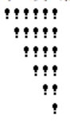
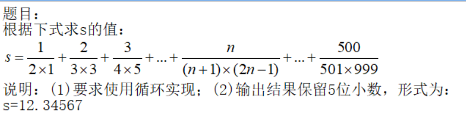

1. （8分）键盘输入梯形的上底长a、下底长b和高h，计算并输出梯形的面积s。计算公式如下：s = (a + b) * h / 2

1. 在屏幕上输出以下图形（说明：字符之间没有空格）。

#include <stdio.h>
void main()
{
int i,j;
i=7; /*$ERROR$*/
while(i>0)
{
j=1;
while(j<7-i)
{
printf(" "); /*输出一个空格*/
j++;
}
j=i; /*$ERROR$*/
while(j<=i)
{
printf("!");
j++;
}
printf("/n"); /*$ERROR$*/
i--;
}
}
2. 函数search的功能是求解一维数组中的最小元素的下标。主函数调用search函数，将已给的一维数组的最小值和最小值下标输出。
#include <stdio.h>
int search(int a[],int n)
{
int i,min;
min=1; /*$ERROR$*/
for(i=1;i<n;i++)
{
if(a[i]<a[min])
min=i;
}
return i; /*$ERROR$*/
}
void main()
{
int a[10]={-13,1,-5,4,9,0,-8,7,-6,2};
int min;
min=search(a[10],10); /*$ERROR$*/
printf("min=%d,address=%d\n",a[min],min);
}
从键盘输入一行字符串，统计其中大写字母个数。
#include <stdio.h>
void main()
{
char str[81];
int i,count;
printf("Input a string:\n");
_________; /*$BLANK$*/
count=0;
i=_________; /*$BLANK$*/
while(str[i]!='\0')
{
if (str[i]>='A'&&str[i]<='Z')
_________; /*$BLANK$*/
i++;
}
printf("%d\n",count);
}
1. （8分）键盘输入梯形的上底长a、下底长b和高h，计算并输出梯形的面积s。计算公式如下：s = (a + b) * h / 2
2. （10分）根据下式求s的值：
要求：(1)使用循环实现；(2)输出结果保留5位小数，形式为：s=12.34567
3. （12分）2020年新冠肺炎疫情期间，某医院4月份每天治愈病人数存储在数组a中，计算并输出该院4月份累计治愈病人总数和每天治愈病人数的平均值（要求使用循环实现，平均值结果保留2位小数）。
int a[30]={11,15,17,20,31,12,45,56,65,81,68,83,69,62,90,
89,85,83,83,70,79,81,62,76,79,66,85,89,89,72};